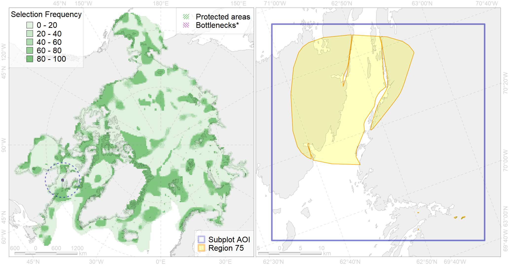

Region 75
Region 75
“ArcNet” scenario 33 achievement for region 75.
Use Accenter for advanced mode.

0
CFs inside of Region completely
0
CFs inside of Region at quarter
0
Complete-targets achievement by Region
0
Half-targets achievement by Region
| CF | Name | Target Achievement for Region | Proportion of Target Achievement in Region | Amount Proportion in Region |
|---|---|---|---|---|
| 1011 | Atlantic Walrus haulouts in Nunavut and West Greenland | 0.6% | 0.6% | 0.8% |
| 3131 | polynya Hudson St | 2.1% | 0.8% | 0.3% |
| 6029 | Glaucous gull (Larus hyperboreus euceretes) breeding grounds | 2.1% | 0.5% | 0.3% |
| 1003 | Atlantic Walrus Wintering Areas in Canada | 0.3% | 0.2% | 0.2% |
| 5104 | Bowhead whale Baffin population winter distribution | 0.7% | 0.3% | 0.2% |
| 7142 | III.2.1.1. Baffinian shelf | 1.4% | 0.2% | 0.1% |
| 5065 | Killer whale summer feeding areas in the North West Atlantic | 1.4% | 0.1% | 0.1% |
| 5030 | Beluga of the Ungava Bay winter distribution | 0.6% | 0.2% | 0.1% |
| 5033 | Beluga of the Western Hudson Bay winter distribution | 0.2% | 0.2% | 0.1% |
| 9007 | polar bear of the FB (Foxe Basin) subpopulation distribution | 0.2% | 0.2% | 0.1% |
| 6015 | Black guillemot (Cepphus grylle mandti) breeding grounds | 0.5% | 0.1% | 0.1% |
| 5039 | Bowhead whale autumn concentrations in the Baffin Bay | 0.1% | 0.1% | 0.1% |
| 4007 | Feeding/nursery area of the Cisco (Coregonus artedi) (F 13) | 0.1% | 0.1% | 0.1% |
| 2022 | Harp seal foraging areas in the Hudson Bay | 0.1% | 0.1% | 0.0% |
| 1002 | Atlantic Walrus Summer Distribution in Canada | 0.1% | 0.0% | 0.0% |
| 3022 | Marginal Ice Zone distribution in April in the Hudson Bay LME | 0.2% | 0.0% | 0.0% |
| 2010 | Bearded seal whelping areas in the Hudson Bay | 0.1% | 0.1% | 0.0% |
| 8037 | Salt marshes of the Hudson Bay LME | 0.1% | 0.0% | 0.0% |
| 4075 | Fish zoogeography, Arctic Region, High-Arctic Shelf Province, Hudson District | 0.2% | 0.1% | 0.0% |
| 2048 | Ringed seal whelping areas in the Hudson Bay area | 0.1% | 0.1% | 0.0% |
| 2019 | Harbour seal range in the North Atlantic region | 0.2% | 0.0% | 0.0% |
| 4059 | Range of the Greenland Halibut (Reinhardtius hippoglossoides) (F 49) | 0.4% | 0.0% | 0.0% |
| 4029 | Feeding area of the Arctic charr (Salvelinus alpinus), anadromous populations (F28) | 0.0% | 0.0% | 0.0% |
| 4055 | Range of the Shorthorn Sculpin (Myoxocephalus scorpius) (F 46), American populations | 0.3% | 0.0% | 0.0% |
| 4053 | Range of the Fourhorn Sculpin (Myoxocephalus quadricornis) (F 45), Euro-Asian populations | 0.3% | 0.0% | 0.0% |
| 3035 | Marginal Ice Zone distribution in July in the Hudson Bay LME | 0.0% | 0.0% | 0.0% |
| 4046 | Range of the Thorny Skate (Amblyraja radiata) (F 3) | 0.1% | 0.0% | 0.0% |
| 6083 | Thick-billed murre (Uria lomvia lomvia) wintering grounds | 0.0% | 0.0% | 0.0% |
| 4003 | Range of the Atlantic Capelin (Mallotus villosus) (F10) | 0.1% | 0.0% | 0.0% |
| 4041 | Range of the Polar Cod (Boreogadus saida) (F35) | 0.0% | 0.0% | 0.0% |
| 5112 | Arctic Cetaceans (beluga, bowhead, narwhal) winter habitats as predicterd by MIZ | 0.0% | 0.0% | 0.0% |